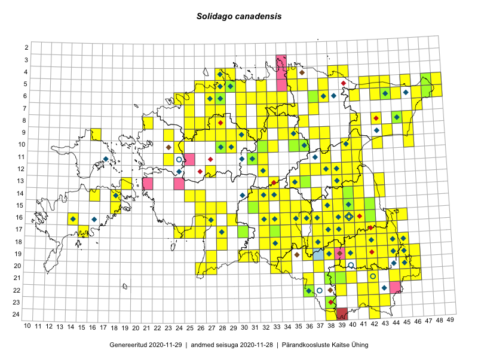

Solidago canadensis
Uuendatud: 2016-12-01
Kaardile koondatud taksonid: Solidago canadensis L.

Kaart põhineb 394 kirjel, neist vaatlusi 391 ja eksemplare 3.
Kuvatud viited 20 esimesele andmebaasikirjele, ülejäänud PlutoFis
- Thea Kull: 2015-07-07: 16-40: ala
- Rein Kalamees, Kersti Püssa: 2015-07-15: 20-45: GPS punkt
- Toomas Kukk, Eerik Leibak: 2015-08-08: 15-18: ala
- Toomas Kukk, Eerik Leibak: 2015-08-08: 15-18: GPS punkt
- Peedu Saar, Liina Oja: 2015-07-21: 06-44: GPS punkt
- Rein Kalamees: 2015-09-03: 05-32: ala
- Peedu Saar, Liina Oja: 2015-07-15: 06-44: GPS punkt
- Peedu Saar, Liina Oja: 2015-07-22: 08-45: GPS punkt
- Peedu Saar, Liina Oja: 2015-06-09: 17-28: GPS punkt
- Peedu Saar, Thea Kull: 2015-06-17: 17-38: GPS punkt
- Peedu Saar, Eerik Leibak: 2015-07-30: 15-42: GPS punkt
- Peedu Saar, Eerik Leibak: 2015-07-30: 16-41: GPS punkt
- Peedu Saar: 2015-07-15: 15-39: ala
- Tiit Hallikma, Toomas Kukk: 2015-07-22: 05-49: ala
- Tiit Hallikma, Toomas Kukk: 2015-07-22: 05-49: GPS punkt
- Peedu Saar, Eerik Leibak: 2015-07-30: 15-42: ala
- Peedu Saar, Eerik Leibak: 2015-07-30: 16-41: ala
- Toomas Kukk, Kersti Tambets, Sten Mander, Janika Sammasto, Timo Luhamäe: 2014-07-29: 18-45: ala
- Peedu Saar, Liina Oja: 2015-06-09: 17-28: ala
- Ott Luuk, Peedu Saar: 2015-09-04: 05-30: GPS punkt